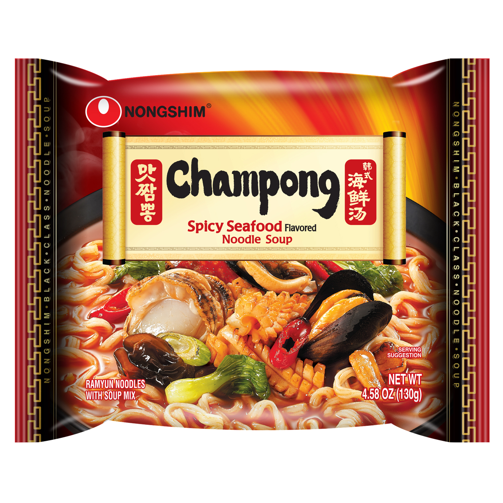
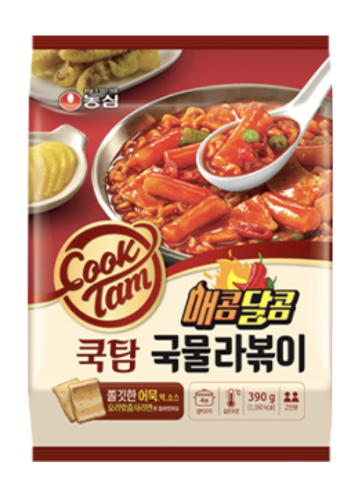
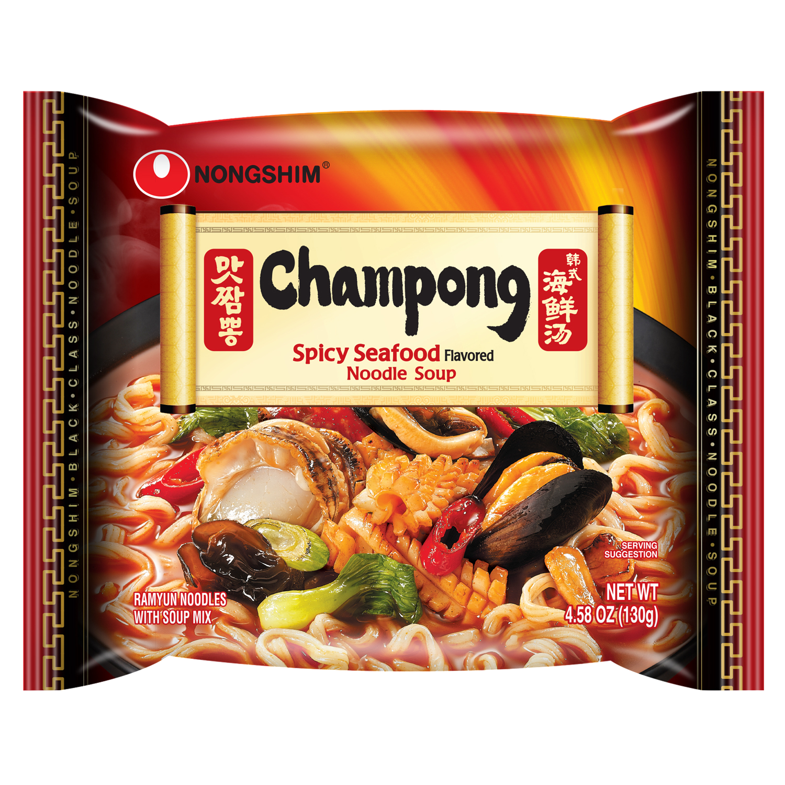
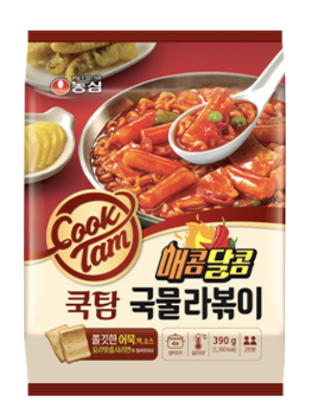

Shrimp Big Bowl
Weight: 115g
Year of Release: 1989
Rating: 1/5
Notable flavors: shrimp(?), fish jerky, crab meat
This doesn't taste like real shrimp! I don't think I even finished this before I threw it out.

This doesn't taste like real shrimp! I don't think I even finished this before I threw it out.

 


